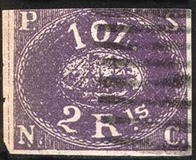
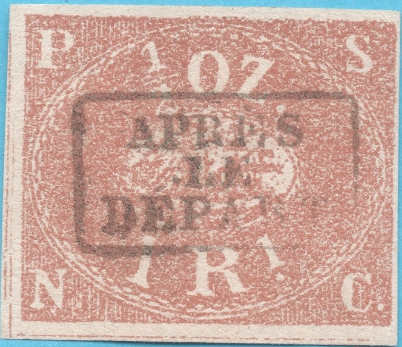
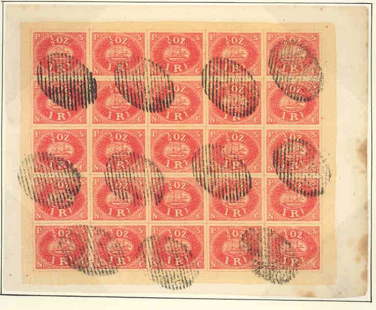
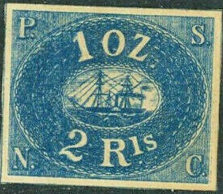
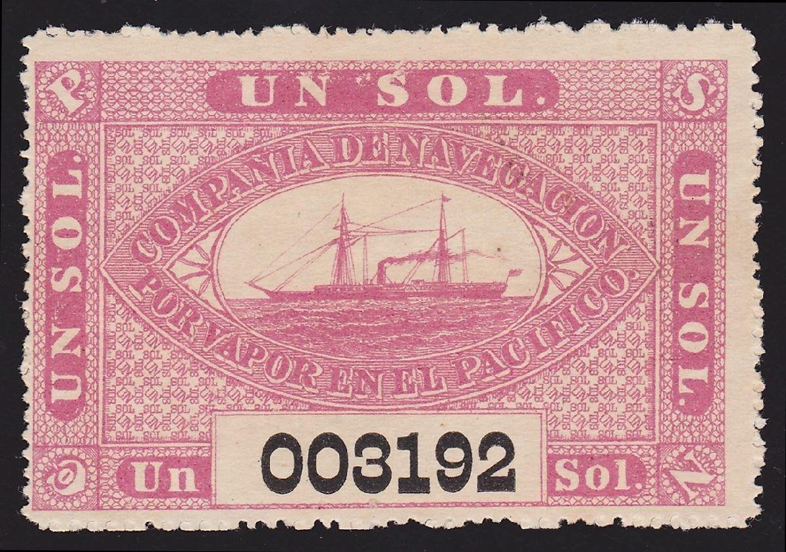

Note: on my website many of the
pictures can not be seen! They are of course present in the
catalogue;
contact me if you want to purchase the catalogue.
More information about this company can be found at: http://www.theshipslist.com/ships/lines/pacific.html, I quote from this site: "Formed in London in 1838, the company commenced operations on the West Coast of South America in 1840. In 1852 they were granted the British Government Mail contract to the area."
1 Rl blue 2 Rls red
Value of the stamps |
|||
vc = very common c = common * = not so common ** = uncommon |
*** = very uncommon R = rare RR = very rare RRR = extremely rare |
||
| Value | Unused | Used | Remarks |
| 1 rl blue | RRR | RRR | |
| 2 rls red | RRR | RRR | |
| Non issued values | RR | - | In other colours than the above mentioned |


Both of these stamps were also prepared in blue, red, brown, yellow and green, but never put into use (though 'The World of Classic Stamps' by J.A.Mackay states that some were used, recognizable by the oval numeral cancels used by this company). The 2 stamps were bought by the Peru government from the Pacific Steam Navigation Company and used from the 1st of December 1857 till the 1st of March 1858 to be used on letters between Lima and Chorillos. These stamps are very rare in used condition. Stamps used in Peru have cancels with the name Lima (with or without date) and Callao.
There are only a few hundred known used stamps that have survived.

I've been told that this is a genuine stamp with a Lima cancel.
This stamp is cancelled with a numeral "6" cancel, I
presume this cancel is genuine (could this be a stamp used by the
PSNC company itself?). This numeral "6" cancel is known
to have been forged.
I've been told that the next stamps are engraved proofs of this issue (however no such proofs are found in the Peyton collection):
In The Peru Philatelic Study Circle journal #258,
http://www.peru-philatelic-study-circle.com/files/Trencito2/v8_01-2019.pdf
a list of cancels on genuine stamps is given:
1) "LIMA" date and year in a circle as shown above.
2) A pattern with dots with "LIMA" or
"CALLAO" inside. Similar forged "ARICA"
cancels are known.
3) Barred numeral cancels with "5", "6" (as
shown above) or "7". Forged numeral "6"
cancels are known.
A red "SAN JUAN" in an ellipse is known as a forged
cancel.

"ARICA" cancel, possibly forged. The exact same cancel
is shown in The Peru Philatelic Study Circle journal #258 on a 1
Rs genuine stamp.
http://www.peru-philatelic-study-circle.com/Presentations/The_Peyton_Collection_of_Peru.pdf
Many forgeries exist. Earee says in his 'Album
Weeds': "I really think that the forgeries of these
stamps are more abundant than any other counterfeit described in
this book". He distinghuishes three types of forged 1 r
stamps and five types of forged 2 r stamps.
The book "Peru Postal Cancellations 1857-1873" by
Georges Lamy and Jacques-Andre Rinck (1964) lists the fantasy
cancels used on forgeries, which makes them easy to identify:
1) a target cancel consisting of four concentric circles,
2) a diamond consisting of square dots,
3) Paris star cancel with "37",
4) an oval with parallel lines.


There seem to be at least 8 distinct types of Pacific Steam Navigation Company forgeries. In the genuine 1 Rs stamp the dot behind the 'S' is joined to the shadow of it, in the quite common Spiro forgery there is a clear space between the 'S' and the dot. I don't know if this can also be applied to the 2 Rls stamp.
The second stamp could be a Zechmeyer forgery? The third stamp is
presumably a Young forgery.
The above forgeries can easily be recognised. In the genuine 2 Rls stamp the ship is sailing from the left to the right hand side. However here it is sailing from right to left as in the 1 Rl stamp!






Probably Spiro forgeries, note the guidelines between the stamps:
(Spiro cancels, reduced sizes)

Another forgery, the ship is quite different from the genuine stamps:


This particular forgery is one the crudest and rarest of the many PSNC forgeries ever produced. I think it is the fourth forgery mentioned in Album Weeds. The ship is sailing in the right direction, but the rest of the design is very crude, for example the inner chain pattern in the ellipse bearing the ship only has twenty-nine links (there should be 49).
Very primitive forgeries:
(Reduced sizes)
I have seen the following values of the above primitively printed forgeries (made in India?): 1 r red, 1 r orange, 1 r green, 1 r blue, 2 r red, 2 r orange, 2 r green and 2 r blue. The ship in the 2 r values is saling in the right direction. They are all cancelled with an English 'B?2' cancel (I can't read the number in the middle).
The next forgeries are also very blotchy, also note that some of them bear a French numeral cancel:
In the 2 rs value, the ship is saling in the wrong direction again.


Young forgeries? I've only seen them with this 4 ring cancel
which also exists on the Spiro forgeries (but the dot behind the
"S" is closer to this letter in the Young forgeries).
I've been told that the above forgeries were made by Chauncey.L.Young (before 1921). See www.bondskeuringsdienst.nl/BKD.pps.

(A more sophisticated forgery)




More convincing forgeries, but rather overinked.
Forgery(?) with very large '1' and '2'


Very primitive forgery. It was apparently copied from an
illustration in Le Timbre Poste by Moens
of 1863, page 12. It also appears in the catalogue of Placido Ramon de Torres "Album
Illustrado para Sellos de Correo" of 1879 (information
passed to me thanks to Gerhard Lang, 2016) on page 233 (see last
image).

Rather primitive forgeries.

A forgery of the 2 Rls, note the strange bottom left part of the
"2". The last three ones seems to have been inspired by
the first stamp, but are much less convincing.
Another two rather primitive forgeries. Note the white slanting
'line' that goes through the bottom "C".


Front and back from what is most likely a cut from an auction
catalogue (there is a penny black printed at the backside).
I know that the forger Zechmeyer has produced forgeries of these stamps in 1862. They must be very primitive, but at least the ships are sailing in the right direction (they might be the ones shown earlier).
The forger Giovanni Patroni also made forgeries of these stamps (V.E.Tyler, 'Philatelic Forgers, their Lives and Works'), if anyone has more information, please contact me! According to Tyler a description of these forgeries can be found in 'The Philatelist 39, 199-202, 1973).

Fiscal stamps from the same company, at least the values 20 c
black and 80 c blue exist.


{kind=link}
{kind=link}
{kind=link}